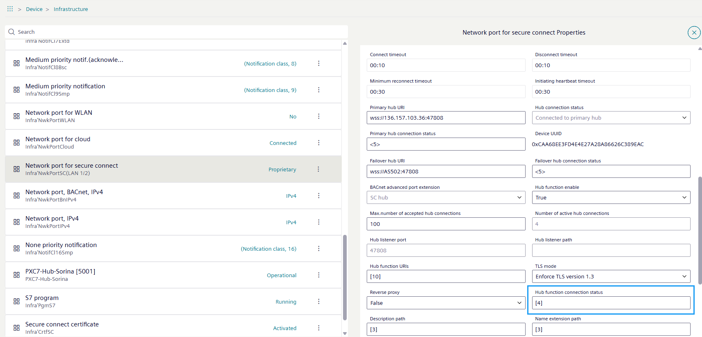
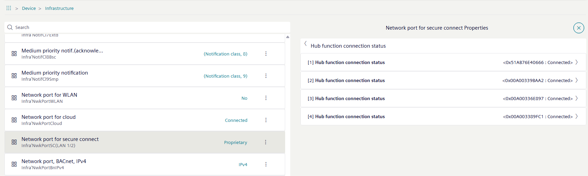
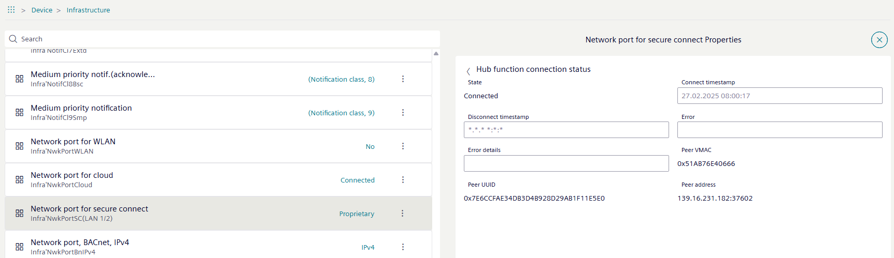
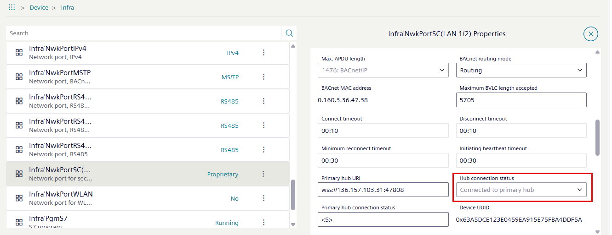
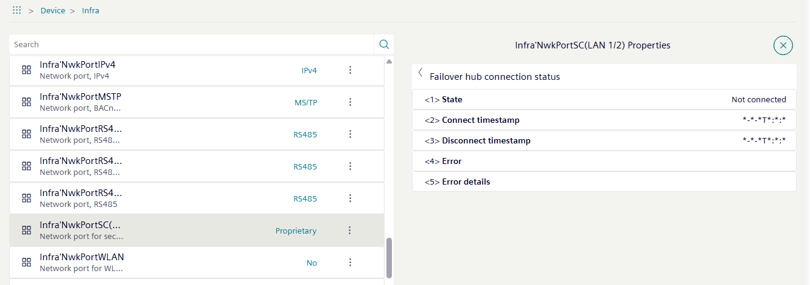

Checking hub connection
A floor hub acts as a hub to its nodes as well as a node to the building hub. The connection states must therefore be checked in both directions.
Checking connection from the floor hub to the nodes
- The user is logged into a hub.
- Go to the Object view tab.
- Select Device.
- Select Infrastructure > Network port for secure connect.
- Select .
- The Network port for secure connect properties dialog area opens.

- Select the Hub function connection status field.
Note: The number refers to the number of nodes that belong to this hub. - The Hub function connection status dialog area opens.
Note: The number refers to the number of entries below this node. 
- Select one of the Hub function connection status rows.
Note: Unfortunately, there is no condition overview at this level. Therefore, all entries must be opened individually to find the error. With up to 100 nodes, this can take some time. - The extended Hub function connection status dialog area opens.

- Analyze the information displayed for further troubleshooting.
Checking connection from a floor hub to a building hub
In this case, the floor hub acts as a node that connects to the building hub.
- Select Network port for secure connect and then .
- The Network port for secure connect properties dialog area opens.

- In the Hub connection status field, check the connection status.
- If
Connected to primary hubis displayed, everything is fine and there is no need for further diagnosis. If a different message is displayed, more information can be displayed in the fields Primary hub connection status and Failover hub connection status. The number <5> refers to the number of individual pieces of information available for this field.
Error analysis
- The Hub connection status does not show the
Connected to primary hubinformation.
Error list
- Select either Primary hub connection status or Failover hub connection status field.
- The Primary hub connection status dialog area opens.

- Analyze the information displayed for further troubleshooting.

The time entry in the Connect timestamp row shows the time of the last connection attempt to the primary hub.